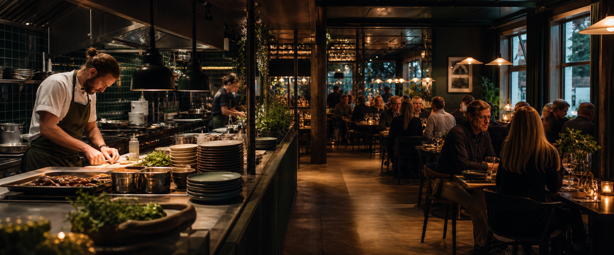

Råd kl. 17:30+9 400 kr i omsetning
Øk bemanningen med én person på kjøkkenet kl. 17:45–20:15.
Reservasjonene og værmeldingen peker mot høyere trykk enn normalt. Kjøkkenet blir flaskehalsen først.
AI-drevet beslutningsstøtte for restauranter
Rett bemanning, smartere innkjøp og bedre lønnsomhet – time for time.
Råd kl. 17:30+9 400 kr i omsetning
Reservasjonene og værmeldingen peker mot høyere trykk enn normalt. Kjøkkenet blir flaskehalsen først.

Slik fungerer det
Kasse, regnskap og bemanning kobles trygt til Scope.
Data, vær og historikk leses i sammenheng – automatisk.
Ett konkret tiltak når det betyr mest, med forklaring og effekt.
Åpent for søknader
Bli med og form fremtidens restaurantdrift
Gratis i testperioden, personlig oppsett og ingen bindingstid. Vi har et begrenset antall plasser.